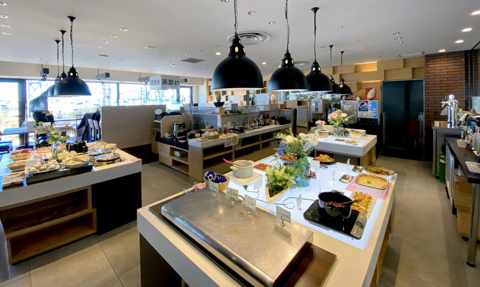
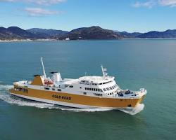
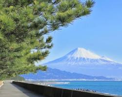
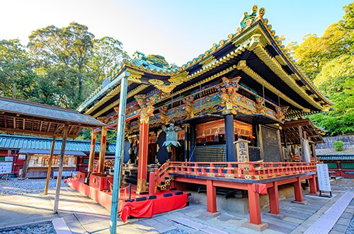

グルメ & ショッピングエスパルスドリームプラザ「はとばキッチン」 📍
清水港のヨットハーバーを目の前に望む複合商業施設。お昼は旬の地元野菜や新鮮食材をたっぷり使った大人気のビュッフェランチ「はとばキッチン」を堪能します。
🍽️ はとばキッチンの詳細・メニューを見る →中部コンピュータ・パティシエ専門学校
歴史と富士の絶景、海の幸を満喫する静岡・清水の旅

グルメ & ショッピング清水港のヨットハーバーを目の前に望む複合商業施設。お昼は旬の地元野菜や新鮮食材をたっぷり使った大人気のビュッフェランチ「はとばキッチン」を堪能します。
🍽️ はとばキッチンの詳細・メニューを見る →
体験 & クルーズ
世界文化遺産 & 絶景富士山世界文化遺産の構成資産。約7kmの海岸線に約3万本の松が生い茂り、松林越しに望む富士山と打ち寄せる白波の景色は圧巻です。
🌲 三保の松原の詳細・羽衣伝説を見る →
国宝 & パワースポット徳川家康公をご祭神とする最初の東照宮。国宝に指定された本殿をはじめ、極彩色の美しい社殿が立ち並び、日本平からのロープウェイ空中散歩も魅力です。
⛩️ 久能山東照宮の詳細・参拝案内を見る →